<!-- Alsaggaf -->
<section class="main" [class.side-menu-close]="isSideMenu">
  <div class="nav_bar">
    <span></span>
    
    <span></span>
    <span></span>

  </div>
  <div class="side-menu">
    <div class="menu-button-wrapper">
  <button class="mat-menu-button" mat-icon-button (click)="isSideMenu = !isSideMenu">
    <div *ngIf="isSideMenu"><mat-icon class="white-icon">keyboard_arrow_left</mat-icon></div>
    <div *ngIf="!isSideMenu"><mat-icon class="white-icon">keyboard_arrow_right</mat-icon></div>
  </button></div>
    
    <div class="logo-underline"></div>

    <!-- [routerLinkActive]="i != 0 ? 'active' : ''" -->
    <nav class="menu">
      <a class="items">
        
        <span>{{ 'SETTINGS.nitro' | translate}}</span>
      </a>
      <a *ngFor="let item of sideMenu; index as i" (click)="activeLink = (item.name).split('.')[1]"
        [routerLink]="item.path" class="items" routerLinkActive="active">
        
        <span>{{ item.name | translate}}</span>
      </a>
      <a class="items" routerLink="." (click)="signOut()">
        
        <span>{{ 'LANDINGPAGE.sign-out' | translate}}</span>
      </a>
    </nav>
  </div>

  <section class="dashboard">
    <router-outlet></router-outlet>
  </section>
</section>

<!-- Alsaggaf end -->
